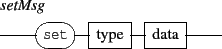

Next: 6.5 The 'debug' nodes
Up: 6. Type specific messages
Previous: 6.3 Symbolic score management
Contents
Index
6.4 The 'grid' object
The grid object provides a pre-defined time to graphic mapping organized in columns and row. By default, it is not visible (white, transparent) but supports all the attributes of rectangles (color, pen, effects, etc.). Each element of a grid has a duration that is computed as the grid duration divided by the total number of elements ( columns x rows) and is placed in the time space from the date 0 to the end of the grid duration.

- columns set the number of columns of the grid,
- rows set the number of rows of the grid,
- xborder set the horizontal spacing between the elements of the grid (default is 0.),
- yborder set the vertical spacing between the elements of the grid (default is 0.),
- order defines the time order of the elements. By default, elements are organized from left to right first and from top to bottom next (leftright). The topbottom parameter changes this order from top to bottom first and from left to right next.
EXAMPLE
Creating a 10 x 10 grid organized from top to bottom with a border:
/ITL/scene/grid set grid 10 10
/ITL/scene/grid xborder 3.
/ITL/scene/grid yborder 3.
/ITL/scene/grid order topbottom
|
Next: 6.5 The 'debug' nodes
Up: 6. Type specific messages
Previous: 6.3 Symbolic score management
Contents
Index
Grame - INScore project